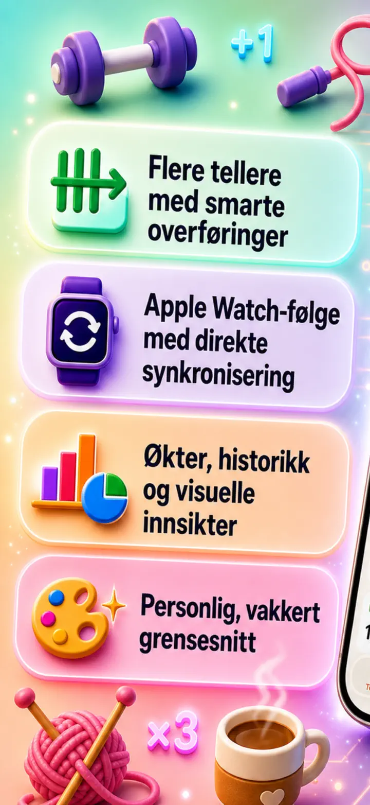
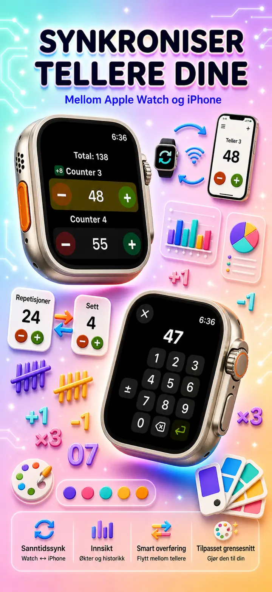
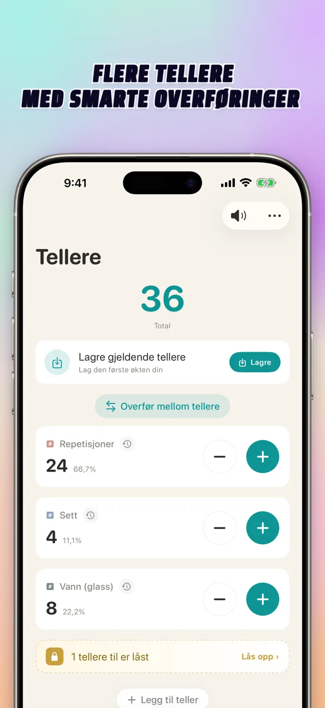
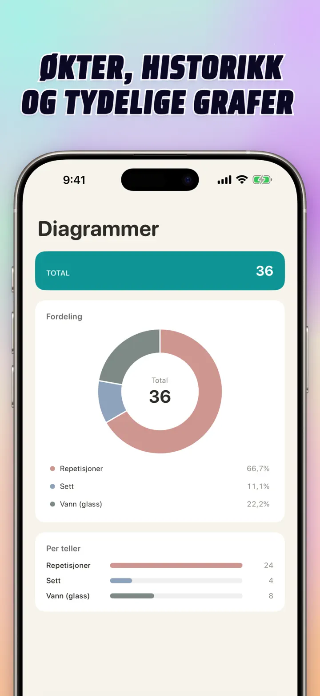
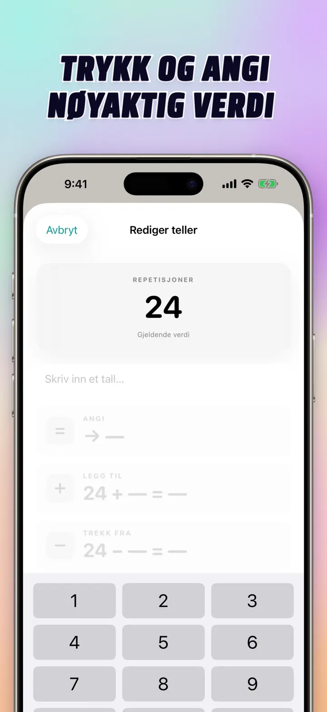
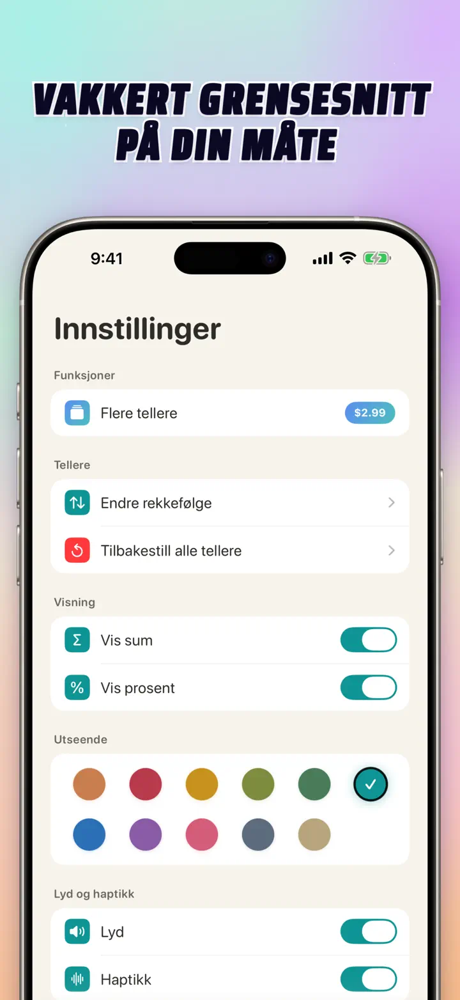
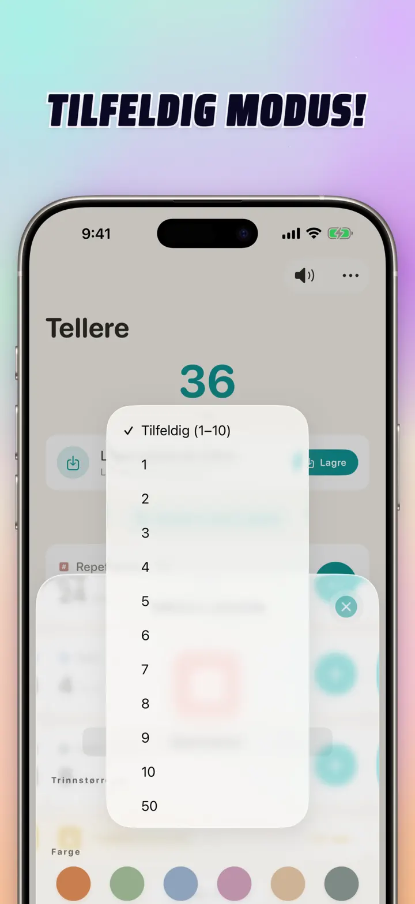

Teller 123
Watch-sync, klikker, score
Nytt: widgets på Hjem-skjermen — trykk +/- på widgeten uten å åpne appen. Teller og klikker med Apple Watch-sync, tilfeldig modus, grafer og historikk.
Last ned i App Store
Om appen
Teller 123 er den raske og fleksible telleren for iPhone, iPad og Apple Watch. Gi hver teller et navn, velg en farge og tell hva som helst — sett på trening, rader i strikking, rosenkrans, poeng i klassen, inventar, kampscore. Alt blir lokalt på enheten, fungerer offline.
TILPASSEDE TELLERE
- Lag egne tellere for aktiviteter, spill, rutiner eller lister
- Eget navn og farge per teller
- Dra for å endre rekkefølge
- Hold inne for å telle raskt
- Helt offline — ingen konto, ingen sky
DIREKTE INNTASTING & BULKHANDLINGER
- Trykk på en teller for å sette en startverdi direkte — uten å nullstille først
- Bulk-+/-: endre en teller med et hvilket som helst tall med ett trykk
- Overføring: flytt en verdi fra en teller til en annen uten å telle dobbelt
- Egendefinert steg: ett trykk legger til 1, 5, 10, 100 eller det du velger
- Live forhåndsvisning av hver endring
TILFELDIG MODUS
- La en teller rulle en ny verdi fra 1 til 10 for hvert trykk
- Legg til eller trekk fra tilfeldige verdier med + og -
- Nyttig til øvelser, spill, belønninger, klasseaktiviteter og rutiner
- Hvert tilfeldige trykk lagres i tellerens historikk
SUMMER & GRAFER
- Samlet sum av alle tellere i ett blikk
- Prosentvisning: hvor mye hver teller bidrar til helheten
- Interaktivt søylediagram — veksle mellom verdi (#) og prosent (%)
- Sorter etter verdi for en umiddelbar rangering
HISTORIKK & DELING
- Full historikk: hver økning, reduksjon og redigering logges
- Lagre sett med tellere og last dem inn igjen på et blunk
- Del konfigurasjoner med laget, elever eller venner
- Se historikk som datologg, grupperte økter eller statistikk per dag/uke/måned
LIVE-SYNC MED APPLE WATCH
- Oppdater en teller på iPhone eller Apple Watch, så holdes begge synkronisert
- Ekte native watchOS-app — ikke bare en følgesvenn
- Navn, farger og verdier synkronisert på håndleddet
- Trykk for å telle, hold for repetisjon — rett fra klokka
- Fungerer alene når iPhonen ikke er i nærheten
FOR iPhone, iPad & APPLE WATCH
- Adaptive layouter for alle skjermstørrelser
- iPad viser flere tellere samtidig, støtter Split View
- Personvern først: lokal lagring, ingen sky, ingen konto
PERFEKT FOR
- Sett og reps på trening
- Rader i strikking og masker i hekling
- Rosenkrans, tasbih, bønneperler
- Poeng i klassen og oppmøte
- Håndball, volleyball, fotball — rask poengregning
- Bordtennis
- Inventar og lagertelling
- Brettspill, kort, bridge, kasino
- Baneomganger i svømming og løp
- Fuglekikking
- Telling av deltakere på arrangementer
- Vaner og mål
Last ned Teller 123 og gjør hver opptelling enkel — klart, raskt, privat.
Personvernerklæring: https://masawata.net/privacy-policy.html Bruksvilkår: https://www.apple.com/legal/internet-services/itunes/dev/stdeula/
Skjermbilder






Teller 123
Nytt: widgets på Hjem-skjermen — trykk +/- på widgeten uten å åpne appen. Teller og klikker med Apple Watch-sync, tilfeldig modus, grafer og historikk.
Last ned i App Store